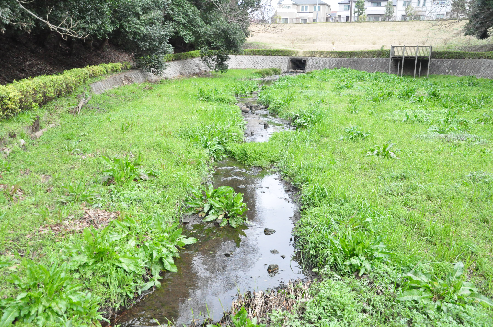

自然が映えるまち
綾瀬市
雄大な自然に癒される
息抜きに緑豊かな公園を散策してみては？
綾瀬市には緑豊かな場所がたくさんあります。
その中でも特に自然を身近に感じられる場所が公園です。
「かながわの花の名所100選」にも選ばれた城山公園をはじめ、
市内にあるさまざまな公園とその周辺を散策することで
新たな発見があるかもしれません。
そこで、市内にある散策にオススメの公園をご紹介します。
城山公園
城山公園は市役所から程近く、市内で2番目の広大な敷地を持つ公園です。 春になると桜の広場ではソメイヨシノやヤマザクラなど約100本の桜が咲き誇り、市内でお花見をするには絶好のスポットです。 花木園では、多種多様なバラと芝桜の美しい色合いを楽しめます。風情あふれる日本庭園では、 縁起の良い紅白の鯉をみられるため、心が安らぎます。また、炊事棟では事前に予約するとバーベキューも可能です。 とても長いローラー滑り台のある遊具広場も子供たちにとっては最高の遊び場です。 気軽に森林浴を楽しみながら散歩してみてはいかがでしょうか？
所在地 早川城山三丁目4-1
光綾公園

市のほぼ中央に位置する光綾公園には、海賊船をイメージした 大型複合遊具「わんぱく丸」があり、いつもたくさんの子供たちで賑わっています。28種約 900本のバラが香るバラ園は、毎年5月中旬頃・11月中旬頃に見頃を迎え、色鮮やかな光景 を楽しめます。「たちばなの池」を中心とした日本庭園では、苔むす大地や松の木などが 昔ながらの落ち着いた緑の空間を作り出しています。また、ソメイヨシノやシダレザクラなど 約60本が植えられているので、春になると桜の大木が頭上いっぱいに枝を広げ、 花吹雪を降らせます。光綾公園にお越しの際はバラが見頃になる5月・11月がオススメです。
所在地 深谷上四丁目5234
蟹ヶ谷公園
市の南西に位置する蟹ヶ谷公園は、珍しい野生生物や花々をみながら散歩を楽しめる公園です。低地部にある湿性園では湧き水を水源として利用し、カキツバタやハナショウブなど、湿地ならではの花を観賞できます。さらに市の鳥であるカワセミやサギ、カルガモなどの野鳥も生息しているため、バードウォッチャーの方々が常に大きなカメラでシャッターチャンスを狙っています。少し坂を登ると見晴らし台があり、天気の良い日には富士山や丹沢が一望できます。公園から少し歩くと見えてくる目久尻川沿いにも、より多くの野鳥を見ることができるため、写真を撮るのが好きな方にもオススメの公園です。
所在地 吉岡905-10